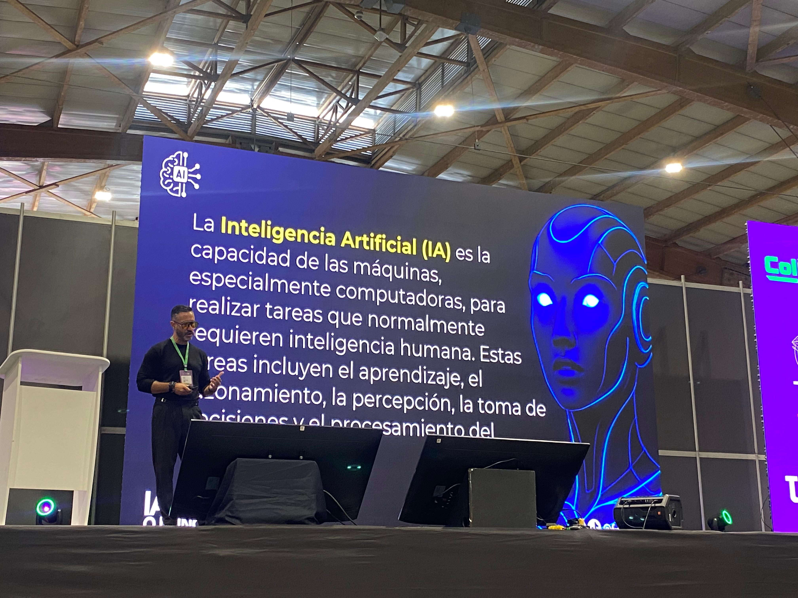
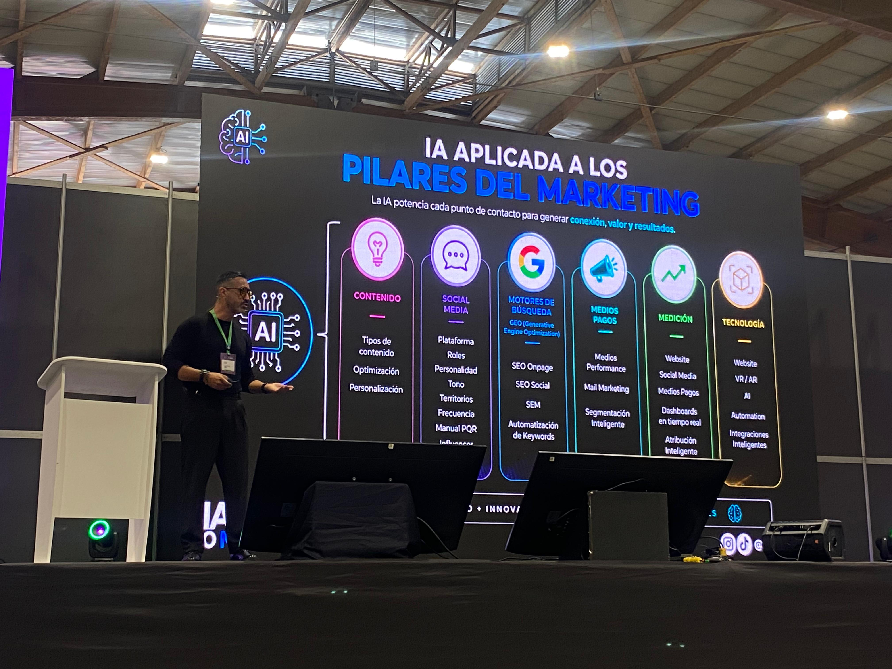
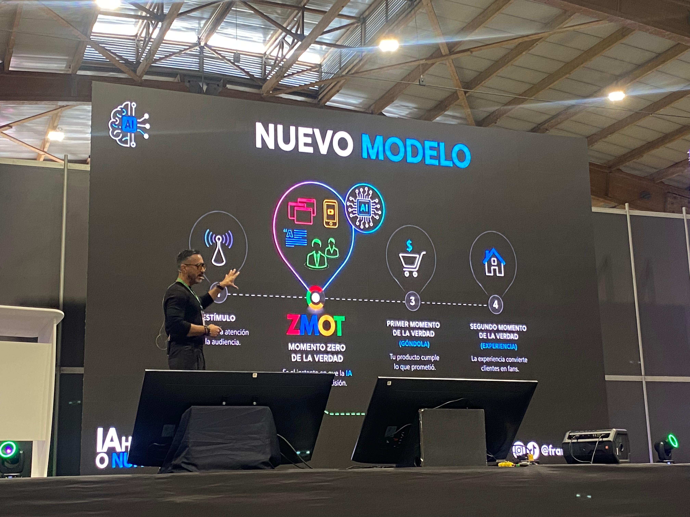
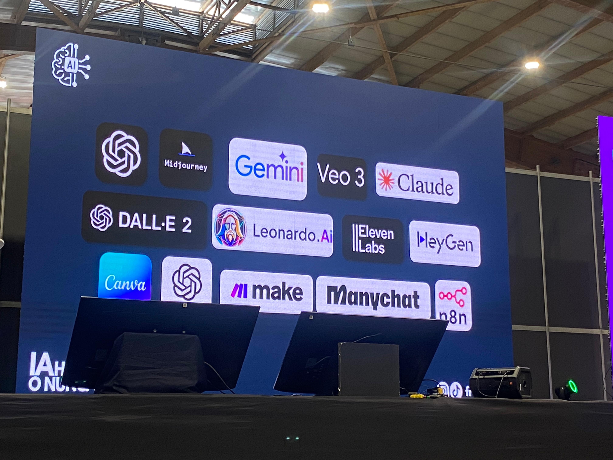

Inteligencia Artificial en Marketing Digital
Conferencista / Speaker: Francisco Urdaneta Cooli
Tema principal / Main Topic: Marketing Digital/ Digital Marketing.




Resumen (ES):
La conferencia estuvo enfocada en el impacto que la inteligencia artificial está teniendo en el marketing y en el mundo de los negocios. El conferencista destacó que el uso de la IA ya no es una opción, sino una necesidad para las organizaciones y profesionales que desean mantenerse competitivos y adaptarse a las nuevas tendencias del mercado. Uno de los principales mensajes fue la importancia de aprender a utilizar la inteligencia artificial de manera adecuada, ya que su implementación permite optimizar procesos, aumentar la productividad y generar nuevas oportunidades de crecimiento. Además, se enfatizó que las empresas que buscan mantenerse vigentes a lo largo del tiempo deben incorporar estas tecnologías en sus estrategias y operaciones. Durante la conferencia también se presentaron diferentes tipos de inteligencia artificial, entre ellos la IA General y la IA Generativa, resaltando el potencial de esta última para la creación de contenido. Como ejemplo práctico, se explicó cómo a partir de una fotografía y una serie de instrucciones es posible generar piezas gráficas y contenido para redes sociales de forma rápida y eficiente. Como conclusión, la conferencia resaltó que la inteligencia artificial se ha convertido en una herramienta fundamental para la innovación y la transformación digital, especialmente en áreas como el marketing, donde la creatividad y la eficiencia son factores clave para el éxito.
Summary (EN):
The conference focused on the impact that artificial intelligence is having on marketing and the business world. The speaker emphasized that the use of AI is no longer optional but a necessity for organizations and professionals who want to remain competitive and adapt to new market trends. One of the main messages was the importance of learning how to use artificial intelligence effectively, as its implementation can optimize processes, increase productivity, and create new growth opportunities. In addition, it was highlighted that companies seeking to remain relevant over time must incorporate these technologies into their strategies and operations. During the conference, different types of artificial intelligence were introduced, including General AI and Generative AI, with special attention given to the potential of generative AI for content creation. As a practical example, the speaker explained how a photograph and a set of instructions can be used to generate graphic materials and social media content quickly and efficiently. In conclusion, the conference highlighted that artificial intelligence has become a fundamental tool for innovation and digital transformation, especially in areas such as marketing, where creativity and efficiency are key factors for success.